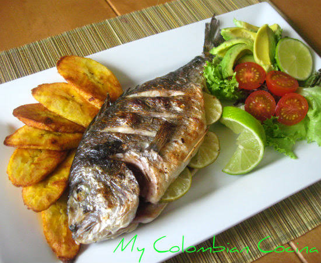
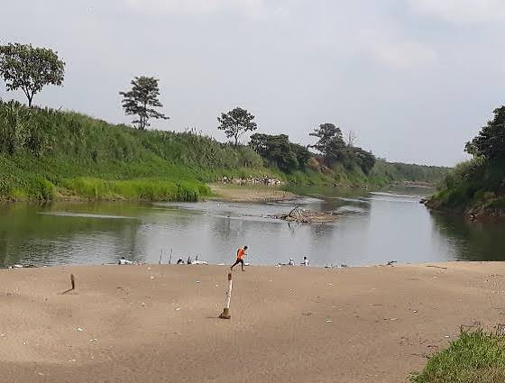

CANTÓN URDANETA
Volver al inicio

Breve descripción y reseña del cantón
Urdaneta es un cantón de la provincia de Los Ríos.
Su cabecera cantonal es Catarama. Sus habitantes se dedican
principalmente a la agricultura, cultivando arroz, cacao,
maíz y otros productos.
Parroquias
Catarama y Ricaurte.
Platos de comida típicos


- Gallo pinto.
- Arroz con menestra.
- Pescado frito.
- Seco de gallina.
Lugares turísticos y por qué son turísticos

- Río Catarama: permite disfrutar de paisajes naturales y paseos familiares.
- Parque Central de Catarama: espacio de encuentro y recreación.
- Playas de río: son visitadas especialmente en temporadas de verano.
Hoteles donde alojarse
Se pueden consultar hostales y residenciales en Catarama.
Alcalde
Amada Zambrano Rodríguez (período 2023-2027; verificar autoridad vigente).
Población
Aproximadamente 33.000 habitantes (referencia del Censo 2022).
Mapa del cantón
Ver mapa de Urdaneta
Regresar a la página principal